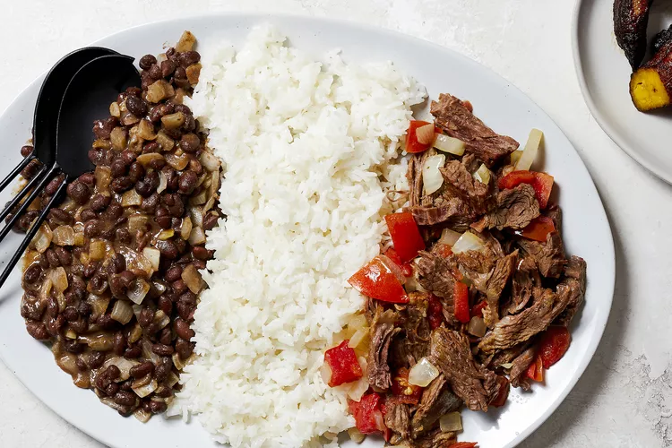

Pabellon

Description
Pabellon criollo is a traditional beans and rice dish of Venezuela.
Black beans (caraotas negras) and rice are accompanied by tender slices
of flank steak that have been cooked with tomatoes.
The name pabellón means flag, and the dish is arranged on the plate so that the
red tomatoes and steak, black beans, and the white rice resemble the three stripes
of a tri-color flag. It is also considered a reference to the Indigenous, African,
and European backgrounds of the Venezuelan population. The lands were colonized by
the Spanish in 1522, and starting in the 18th century colonizers enslaved people in Africa
and brought them to Venezuela to work at cocoa farms. Slavery was abolished in 1854.
Serve pabellon criollo with slices of fried plantain (tajadas) on the side (con barandas, or siderails)
and/or with a fried egg on top (a caballo).
Ingredients
- 1 1/2 pounds flank steak
- 2 teaspoons bouillon cubes
- 4 clove cloves minced garlic
- 6 tablespoons vegetable oil
- 1 1/2 teaspoons salt
- 1 cup white rice, soaked for 20 minutes in warm water
- 1 cup chopped onions (2-3 medium onions)
- 1 15-ounce can black beans
- 1 teaspoon chicken bouillon cube
- 1 1/2 teaspoons cumin
- 1/2 teaspoon garlic powder
- 1 tablespoon vinegar
- 2 tablespoons butter
- 2 medium tomatoes, diced
Steps to Make It
- Gather the ingredients.
- Place the flank steak in a pot with the bouillon, and cover with water.
- Bring to a boil and simmer on low for 1 1/2 hours, or until the meat is tender. Remove from heat and set aside.
- Saute half of the minced garlic in a medium pot with 4 tablespoons of the vegetable oil for 1 to 2 minutes over medium heat.
- Add 2 cups water and 1 teaspoon salt and bring to a boil.
- Add the rice to the boiling water, lower the heat, and simmer the rice, covered, for 10 to 15 minutes. Turn off the heat and leave the rice covered for 5 minutes more.
- Add the remaining 2 tablespoons vegetable oil to a skillet, and saute half the chopped onions with the rest of the minced garlic until soft.
- Add the can of black beans (undrained), 1/2 cup water, chicken bouillon, cumin, garlic powder, vinegar, and 1/2 teaspoon salt, and simmer on low heat for about 10 minutes, until the liquid is reduced.
- Slice the cooled steak against the grain into thin slices. The meat should be very tender and falling apart. Shred the larger pieces into bite-size pieces with your fingers.
- Add 2 tablespoons butter to a skillet and cook the rest of the chopped onions until soft. Add the tomatoes, 1 cup of the steak pan juices, and the sliced steak and simmer for 3 to 5 minutes. Remove from heat and cool.
- Arrange the meat and tomatoes on 1/3 of a serving platter. Place the rice next to the meat, and then place the beans on the other side of the rice, to resemble the stripes of a tri-color flag.
- Serve with fried plantains on the side and enjoy!